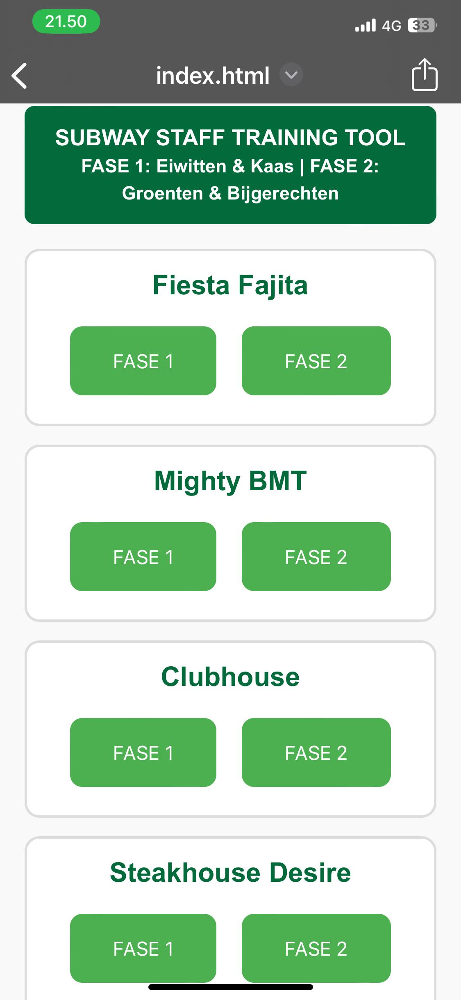
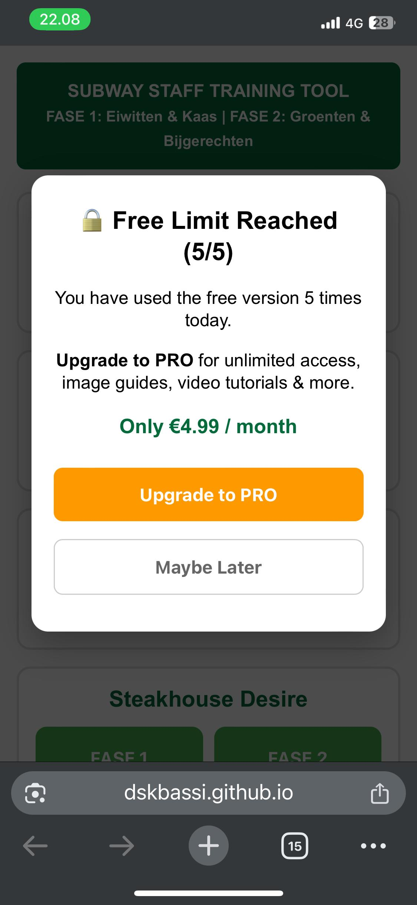

Designer & Developer: Diya Bassi | LinkedIn Profile
Training new fast-food kitchen staff to accurately memorize complex sandwich recipes (such as the Fiesta Fajita or Mighty BMT) is traditionally slow and prone to errors. Standard physical manuals or dense text charts are highly impractical to interact with mid-shift when workers have busy, messy hands.
By assessing real-world quick-service restaurant (QSR) operational patterns, I mapped out three specific user friction points:
To keep the application instantly accessible on the line, the dashboard uses a streamlined, modular layout built around rapid physical actions and clear product targets.

I engineered specialized, high-contrast touch points featuring wide paddings (padding: 18px 10px inside flexible containers) and tactile rounding. This guarantees that an operator can accurately hit the activation trigger with a quick thumb tap without needing to carefully aim or look away from the preparation counter.
Rather than packing an entire recipe into a single long audio file, each product block separates the training stream into discrete FASE 1 and FASE 2 audio triggers. This allows the operator to instantly listen to the exact assembly phase they are building without looking away from the sandwich counter.
To demonstrate functional product thinking, the application is embedded with a strict client-side monetization gateway designed to capture user monetization responses.

To test growth metrics without introducing a high-friction registration screen, I built a background tracking matrix using client-side localStorage loops. The system tracks real-time usage event logs and strictly limits unpaid accounts to 5 daily audio plays.
Upon clicking a 6th time, the application drops a deep modal wrapper (rgba(0,0,0,0.7)) that locks background page interactions, focusing the user's entire attention on the premium upgrade narrative.
The system presents a simulated €4.99/month premium tier subscription. The modal structure is deliberately optimized to drive conversion by communicating direct product values that scale operational utility:
localStorage session management to persist user usage history seamlessly between application loads.